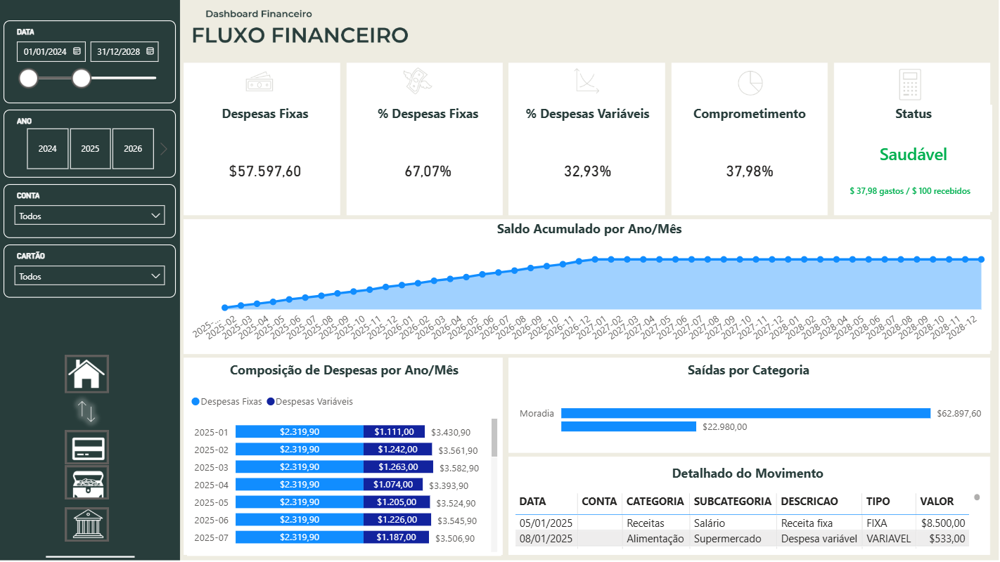
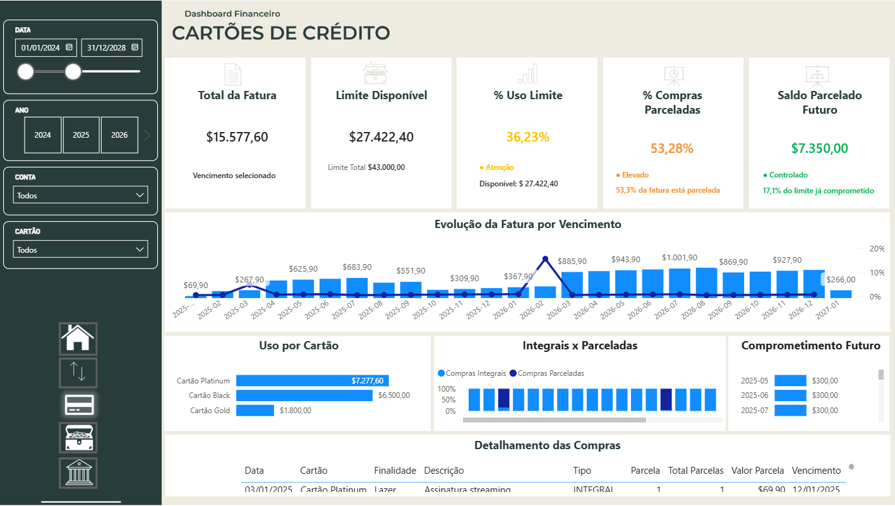
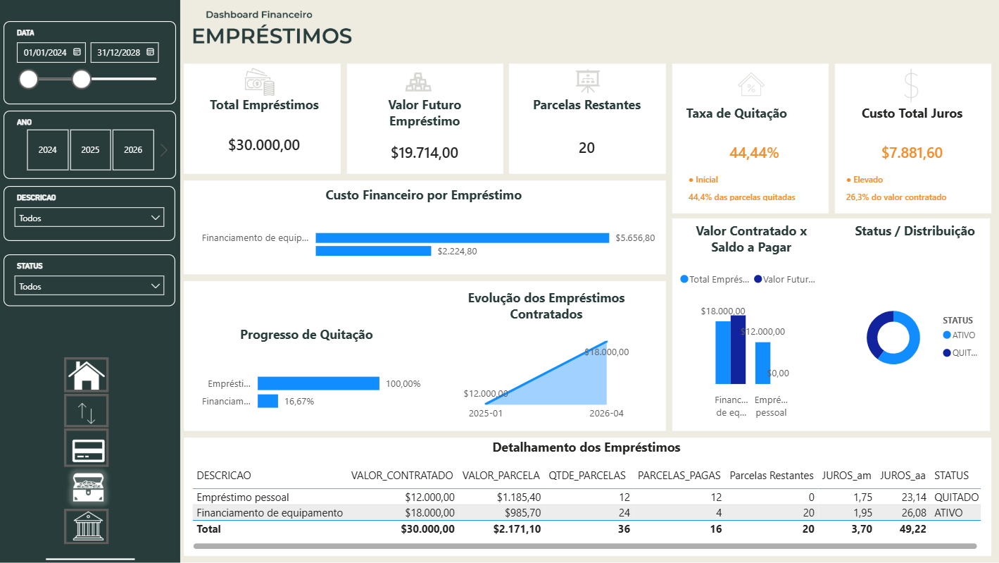

Visão geral
Resumo dos principais indicadores financeiros, evolução do saldo, receitas, despesas e distribuição das movimentações.
Solução de Business Intelligence desenvolvida para transformar dados financeiros em informações claras, acessíveis e orientadas à tomada de decisão.

O projeto foi estruturado para oferecer uma visão consolidada da situação financeira, permitindo acompanhar receitas, despesas, fluxo de caixa, cartões de crédito e empréstimos.
O Dashboard Financeiro centraliza informações que normalmente estariam distribuídas em diferentes planilhas, sistemas ou relatórios. A solução cria uma visão integrada do cenário financeiro e reduz o esforço necessário para interpretar os dados.
A experiência foi construída com foco em clareza visual, consistência, navegação intuitiva e apoio à tomada de decisão. Cada página possui um objetivo analítico específico, mas mantém o mesmo padrão visual e estrutural.
Além da versão original em Português, o dashboard também foi localizado para English (US), incluindo títulos, indicadores, filtros, rótulos e descrições.
O principal desafio foi organizar diferentes elementos financeiros em uma solução coerente, sem sobrecarregar o usuário com excesso de informações.
Receitas, despesas, cartões, empréstimos e saldos podem estar distribuídos em fontes diferentes, dificultando a construção de uma visão financeira completa e confiável.
Os dados foram preparados, relacionados e organizados em um modelo que permite analisar o cenário geral e, ao mesmo tempo, explorar detalhes específicos de cada área financeira.
O layout utiliza hierarquia visual, indicadores, gráficos, filtros e cores consistentes para reduzir o esforço de interpretação em todas as páginas.
A solução ajuda a identificar tendências, períodos críticos, categorias relevantes e oportunidades de melhorar o planejamento financeiro.
Os indicadores foram selecionados para representar a posição financeira atual e facilitar a identificação de variações, tendências e pontos de atenção.
Acompanhamento das entradas financeiras por período, categoria e fonte.
Análise da evolução dos gastos e identificação das categorias de maior impacto.
Comparação entre receitas e despesas para avaliar o resultado acumulado.
Visualização temporal das movimentações e da evolução do saldo.
Controle de faturas, limites, utilização e gastos por cartão.
Acompanhamento de valores contratados, parcelas, pagamentos e saldo devedor.
Distribuição das movimentações financeiras por categoria de receita ou despesa.
Identificação de padrões e mudanças no comportamento financeiro ao longo do tempo.
Cada página responde a um conjunto específico de perguntas, mantendo a experiência visual consistente em toda a solução.

Resumo dos principais indicadores financeiros, evolução do saldo, receitas, despesas e distribuição das movimentações.

Análise das movimentações ao longo do tempo, destacando entradas, saídas, resultado e comportamento do saldo financeiro.

Acompanhamento das faturas, limites disponíveis, utilização dos cartões e distribuição dos gastos por categoria.

Visão dos contratos, parcelas, pagamentos, prazos e valores ainda pendentes.
A construção do dashboard seguiu um fluxo organizado de preparação, modelagem, criação de métricas e visualização.
Dados de contas, transações, cartões, categorias e empréstimos.
Limpeza, padronização, transformação e validação dos dados.
Relacionamentos, tabelas de apoio e medidas analíticas.
Indicadores, gráficos, filtros, navegação e publicação.
O projeto combina preparação de dados, modelagem, cálculos analíticos, visualização e documentação.
Desenvolvimento do relatório, indicadores, gráficos, filtros, navegação e experiência visual.
Criação de medidas, indicadores, comparações temporais e regras de negócio.
Tratamento, transformação, tipagem e padronização das fontes de dados.
Consulta, organização e preparação das informações utilizadas no modelo analítico.
Organização das entidades, relacionamentos e dimensões para análise eficiente.
Seleção de gráficos e elementos visuais conforme o objetivo de cada análise.
Aplicação de hierarquia, contraste, consistência e navegação orientada ao usuário.
Publicação e disponibilização do relatório em ambiente online.
A localização foi realizada respeitando terminologia financeira, padrões culturais e consistência entre todas as páginas do relatório.
O desenvolvimento da solução envolveu decisões técnicas, analíticas e visuais que ampliaram a qualidade do projeto final.
Cada página deve responder a perguntas específicas e contribuir para uma visão integrada do cenário financeiro.
A quantidade de indicadores precisa ser controlada para evitar ruído visual e facilitar a interpretação.
Cores, componentes, títulos, filtros e espaçamentos consistentes tornam a navegação mais previsível.
Adaptar um dashboard para outro idioma exige revisar terminologia, números, moedas, contexto cultural e espaço disponível nos componentes.
Navegue pelas páginas do dashboard, utilize os filtros e explore os indicadores financeiros diretamente nesta página.
O projeto está concluído como estudo de caso, mas sua arquitetura permite novas funcionalidades e análises.
O Dashboard Financeiro demonstra a aplicação de Power BI, DAX, Power Query, SQL, modelagem de dados e design de informação na construção de uma solução analítica completa.